Histoire et éducation à la citoyenneté
12 / 12 réalité sociales
La reconnaissance des libertés et des droits civils
XXe siècle · Les revendications et les droits
- censure
- démocratisation
- discrimination
- dissidence
- droits
- égalité
- liberté
- répression
- ségrégation

Mise en contexte
Les libertés et les droits civils sont le fondement de la constitution des États démocratiques. Malgré leur portée universelle, reconnue par la Déclaration universelle des droits de l'homme, ces libertés et ces droits ne profitent pas à tous également. De nombreuses voix s'élèvent au 20e siècle pour qu'ils soient reconnus pour tous, sans distinction de sexe ou d'origine ethnique. Les luttes pour la conquête des libertés et des droits civils s'expriment dans divers contextes. Le programme en propose trois : le mouvement féministe, le mouvement de lutte contre le racisme institué et le mouvement de décolonisation. Cette année, nous abordons le mouvement de lutte contre le racisme institué.
En 1948, l'Organisation des Nations unies a reconnu que tous les humains de la planète avaient des droits fondamentaux. Ces droits sont inscrits dans la Déclaration universelle des droits de l'homme, dont le premier article pose que tous les êtres humains naissent libres et égaux en dignité et en droits. De vastes mouvements pour l'obtention de droits voient le jour après la Seconde Guerre mondiale.
Concepts à l'étude
- Censure : le contrôle exercé par une autorité sur ce qui peut être publié, dit ou diffusé.
- Démocratisation : le passage d'un régime où le pouvoir est réservé à quelques-uns vers un régime où il est exercé par l'ensemble des citoyens.
- Discrimination : le fait de traiter une personne ou un groupe moins bien que les autres à cause de ce qu'ils sont.
- Dissidence : le refus, par une personne ou un groupe, d'obéir à l'autorité établie ou à l'idéologie officielle.
- Droits : ce qu'une personne peut légitimement exiger, et que l'État doit protéger.
- Égalité : le principe voulant que toutes les personnes aient la même valeur et les mêmes droits.
- Liberté : la possibilité d'agir, de penser et de s'exprimer sans contrainte imposée par une autorité.
- Répression : l'ensemble des moyens employés par une autorité pour arrêter un mouvement, une opposition ou une revendication.
- Ségrégation : la séparation imposée de groupes de personnes dans les lieux, les services et les droits.
Situer dans le temps
La ségrégation raciale aux États-Unis
Le 20e siècle s'ouvre sur une espérance pour les Afro-Américains. L'esclavage, aboli en 1865, laissait présager l'amélioration de leurs conditions de vie. Pourtant, les discriminations fondées sur la race perdurent dans de nombreux États pendant plusieurs décennies. Les États du Sud, dont l'économie reposait sur l'esclavage, adoptent tour à tour des mesures ségrégationnistes qui réduisent les droits des Afro-Américains. L'ensemble de ces lois est connu sous le nom de lois Jim Crow.
Source : Service national du RÉCIT, domaine de l'univers social
Ce que la ségrégation impose
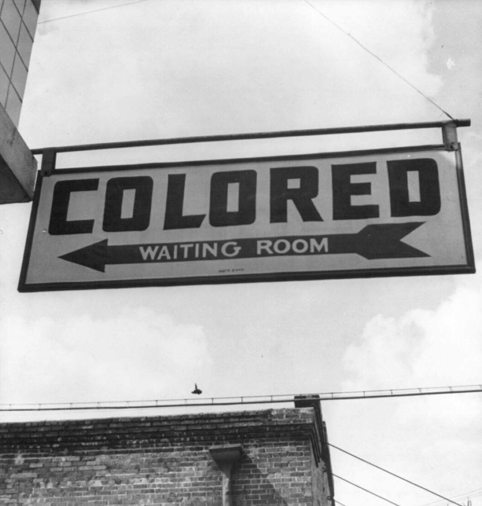
Source
Esther Bubley, 1943 Colored Waiting Room Sign, Wikimedia Commons. Licence : Domaine public.Les droits civils comprennent notamment le droit au respect de la vie privée et familiale, du domicile et de la correspondance, le droit à l'image, le droit à la liberté et à la sûreté, le droit de circulation, le droit à la liberté de pensée, de conscience et de religion, le droit à la liberté d'expression, de réunion et d'association, le droit au mariage et le droit de fonder une famille. La ségrégation retire une partie de ces droits à un groupe désigné par la loi.
La ségrégation raciale correspond à la séparation physique des personnes selon leur race, dans les activités quotidiennes, dans la vie professionnelle, dans la vie en société et dans l'exercice des droits démocratiques. Elle peut être inscrite dans les lois, comme ce fut le cas aux États-Unis entre 1877 et 1964, mais aussi s'imposer dans la vie de tous les jours.
Dans les États ségrégationnistes, les Noirs et les Blancs doivent vivre séparément et ne possèdent pas les mêmes droits civils. Ils n'ont pas accès aux mêmes écoles, plusieurs universités leur sont interdites, ils n'ont pas accès aux mêmes emplois ni aux mêmes salaires. Cela va jusqu'à l'interdiction de s'asseoir dans les premiers sièges de l'autobus, réservés aux passagers blancs. Voici quelques exemples de ce que ces lois interdisent :
- les mariages entre personnes de couleurs différentes;
- la fréquentation des mêmes établissements scolaires;
- l'entrée d'un Noir chez un Blanc autrement que par la porte arrière;
- le maintien d'un Noir sur le trottoir lorsqu'il croise un Blanc.
Les entraves au droit de vote
Les municipalités et les États du Sud mettent en oeuvre une série de règlements qui limitent le droit de vote des Noirs. Ils imposent des frais d'inscription électorale très élevés, qui empêchent les Noirs et les Blancs les plus pauvres de se présenter aux urnes. Ils rendent aussi obligatoires des tests de connaissances afin de limiter l'inscription aux listes électorales et d'exclure les Noirs les moins instruits.
Source : Service national du RÉCIT, domaine de l'univers social
Lutter contre la ségrégation
L'affaire Rosa Parks

Source
Gene Herrick for the Associated Press; restored by Adam Cuerden, Rosa Parks being fingerprinted by Deputy Sheriff D.H. Lackey after being arrested on February 22, 1956, during the Montgomery bus boycott, Wikimedia Commons. Licence : Domaine public.Le 1er décembre 1955, Rosa Parks, une couturière de l'Alabama, prend place à l'avant d'un autobus de la ville de Montgomery, dans une section réservée aux Blancs. Malgré les demandes répétées du conducteur, elle refuse de céder sa place à un passager blanc. Elle est arrêtée par la police et reçoit une amende de 15 dollars, qu'elle conteste.
Pour la soutenir, le pasteur Martin Luther King, partisan des moyens d'action non violents, organise une campagne de boycottage contre la compagnie d'autobus. Cette campagne se poursuit pendant 381 jours. En novembre 1956, la Cour suprême déclare que la ségrégation raciale dans les autobus va à l'encontre de la Constitution des États-Unis.
Source : André Kaspi, Les Américains, tome 2, Éditions du Seuil, 1986
La crise de Little Rock, en 1957
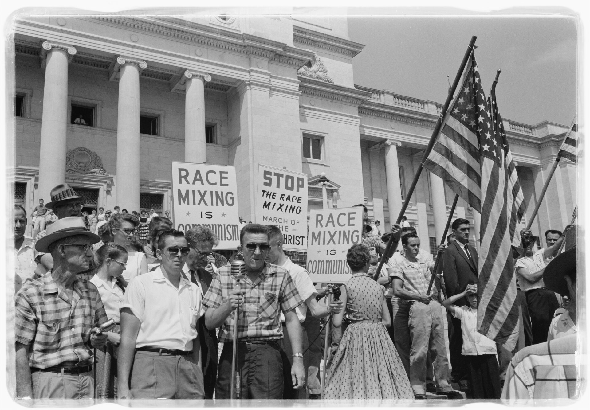
Source
John T. Bledsoe, Little rock integration protest, Wikimedia Commons. Licence : Domaine public.En 1957, neuf étudiants et étudiantes afro-américains s'inscrivent à la Little Rock Central High, une école réservée aux Blancs située dans la capitale de l'Arkansas. L'Arkansas est un État où la ségrégation raciale est omniprésente, mais certaines mesures commencent à être assouplies au gré des luttes pour les droits civils.
Le 4 septembre, ces neuf étudiants se présentent pour suivre leurs premiers cours. Une foule d'élèves mécontents les attend à l'extérieur et les couvre d'injures. Des soldats dépêchés par le gouverneur de l'État les empêchent d'entrer dans l'établissement. Les images filmées font le tour du monde. Il faudra l'intervention du président Dwight Eisenhower pour que ces étudiants puissent assister à leurs cours.
Source : Évelyne Ferron et Karine Prémont, Le monde depuis le XVe siècle, Fides Éducation, 2024
Martin Luther King
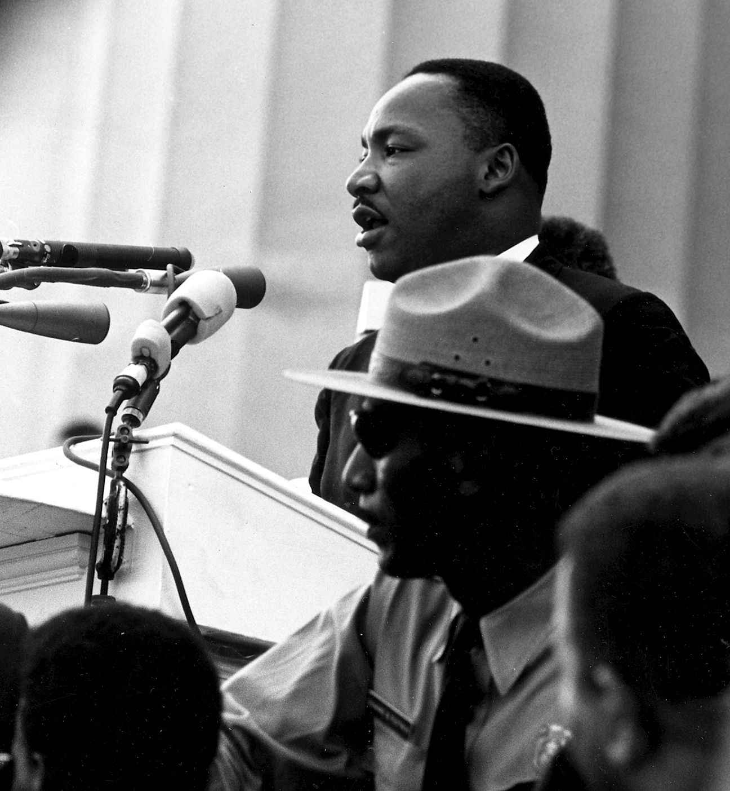
Source
Rowland Scherman, Martin Luther King - March on Washington, Wikimedia Commons. Licence : Domaine public.Militant pour les droits civiques des Noirs, Martin Luther King devient le symbole de la lutte non violente contre la ségrégation aux États-Unis, par des actions comme le boycottage des autobus de Montgomery. Il soutient Rosa Parks lors de ses démêlés avec la justice et prêche pour la fin de la ségrégation raciale. Le 28 août 1963, il prononce devant environ 250 000 personnes, à Washington, le discours resté célèbre sous le titre I have a dream.
Les marches de Selma, en 1965
Le dimanche 7 mars 1965, environ 600 personnes entament une marche vers Montgomery, capitale de l'État, pour affirmer leurs droits électoraux. Seuls 2 pour cent des Noirs de Selma exerçaient alors leur droit de vote. Bloqués sur le pont Edmund Pettus, à la sortie de la ville, ils sont chargés par la police. La répression est retransmise en direct à la télévision. Deux semaines plus tard, plusieurs milliers de personnes, menées par Martin Luther King, quittent de nouveau Selma pour rejoindre la capitale de l'Alabama, à près de 90 kilomètres de là. Elles y arrivent après plusieurs journées de marche. À l'arrivée, elles sont plus de 50 000.
Sa mort
Martin Luther King est assassiné le 4 avril 1968, à Memphis, à l'âge de 39 ans. Il s'y trouvait pour soutenir les éboueurs noirs de la ville, en grève depuis le 12 mars pour obtenir un meilleur salaire et un meilleur traitement. Les éboueurs afro-américains étaient payés 1,70 dollar l'heure et n'étaient pas payés lorsqu'ils ne pouvaient pas travailler pour des raisons climatiques, contrairement aux travailleurs blancs.
L'obtention des droits civils

Source
Cecil Stoughton, White House Press Office (WHPO), Lyndon Johnson signing Civil Rights Act, July 2, 1964, Wikimedia Commons. Licence : Domaine public.La lutte pour les droits des Noirs obtient de grands succès dans les années 1950 et 1960. Le gouvernement fédéral adopte plusieurs lois pour garantir une plus grande égalité. Voici les principales :
- 1956 : la ségrégation dans les autobus est interdite;
- 1957 : loi interdisant la ségrégation en matière électorale;
- 1961 : loi interdisant la ségrégation dans les transports routiers;
- 1964 : loi interdisant la discrimination fondée sur la race, la couleur, la religion ou le sexe, le Civil Rights Act;
- 1968 : loi interdisant la ségrégation dans le logement.
Le Civil Rights Act de 1964
Le Civil Rights Act de 1964 est une loi votée par le Congrès des États-Unis et promulguée par le président Lyndon B. Johnson le 2 juillet 1964. Elle met fin à toutes les formes de ségrégation et de discrimination reposant sur la race, la couleur, la religion, le sexe ou l'origine nationale.
Le Voting Rights Act de 1965
Le Voting Rights Act de 1965 contient de nombreuses clauses qui encadrent le droit de vote. Il garantit que toute personne ayant l'âge minimum aura le droit de voter. Sa deuxième section interdit à tous les États d'imposer des lois électorales qui entraîneraient une discrimination envers une minorité, qu'elle soit raciale ou linguistique. Les tests d'alphabétisation et les autres moyens qui privaient les minorités de leurs droits sont interdits.
La ségrégation raciale en Afrique du Sud
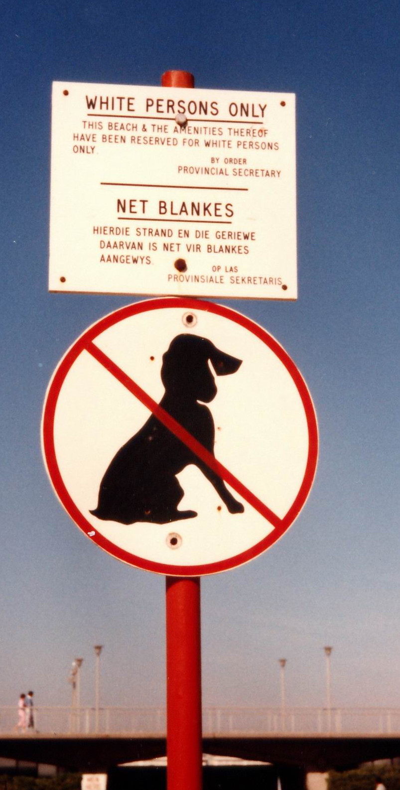
Source
Ullischnulli (Ulrich Stelzner) at de.wikipedia ., Apartheid, Wikimedia Commons. Licence : Domaine public.Cette région d'Afrique a d'abord été colonisée par les Néerlandais, puis, à la suite de la guerre des Boers de 1899 à 1902, par les Britanniques. Fondé sur la ségrégation raciale, le régime de l'apartheid instauré en 1948 donne aux Afrikaners, descendants des colons européens, tous les pouvoirs politiques et économiques. Prévues au départ comme temporaires, ces mesures ségrégationnistes sont progressivement traduites en lois. Apartheid signifie, en afrikaans, vivre à part.
Les lois de l'apartheid
Les lois adoptées prévoient le développement séparé des communautés. Les mariages entre personnes de groupes différents sont interdits. La ségrégation est présente dans toutes les sphères de la société : les transports publics, l'éducation, l'économie. La possession d'un passeport intérieur est obligatoire sous peine d'emprisonnement. Une de ces lois entraîne le phénomène des bantoustans, des territoires où les différents groupes sont maintenus dans une extrême pauvreté. Les terres, dans une proportion de 70 pour cent, sont réservées aux populations blanches.
Lutter contre l'apartheid
Nelson Mandela
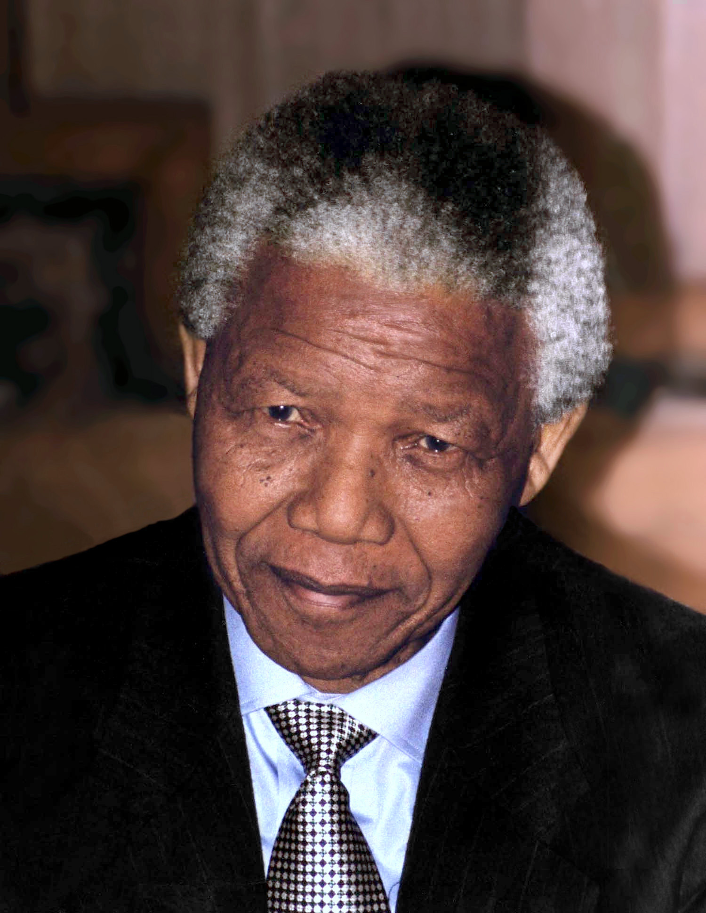
Source
Kingkongphoto & www.celebrity-photos.com from Laurel, Nelson Mandela 1994, Wikimedia Commons. Licence : Creative Commons BY-SA 2.0.Nelson Mandela, né en 1918 et mort en 2013, est issu d'une famille royale de la nation des Xhosas, la deuxième plus importante d'Afrique du Sud. Il fait des études de droit et s'implique rapidement dans des mouvements politiques. En 1942, à 24 ans, il devient membre du Congrès national africain, qui lutte contre la domination politique de la minorité blanche du pays. Lorsque le régime de l'apartheid devient officiel en 1948, il s'engage dans une résistance active et non violente. Comme avocat, il vient aussi en aide gratuitement aux Noirs les plus défavorisés.
Source : Marianne Giguère, Service national du RÉCIT
Le massacre de Sharpeville, en 1960
Le 21 mars 1960, la police tire sur une foule de manifestants dans un canton près de Vereeniging. Soixante-neuf personnes sont tuées et au moins 180 autres sont blessées. Le photographe Ian Berry, présent sur les lieux, a rapporté avoir d'abord cru à des tirs à blanc, avant de comprendre que les balles étaient réelles en voyant les manifestants tomber autour de lui.
De la lutte pacifique à la lutte armée
Le massacre de Sharpeville modifie la stratégie de Mandela. Il délaisse la non -violence et fonde le Umkhonto we Sizwe, la Lance de la nation, un réseau d'action qui prône la lutte armée. Les cibles sont des bureaux du passeport intérieur et des bâtiments du gouvernement, et les opérations sont planifiées de manière à ne pas faire de victimes. Arrêté, il est condamné à la prison à vie en 1964. Il devient le prisonnier politique le plus connu de son époque.
Source : Marianne Giguère, Service national du RÉCIT
La détention sur l'île Robben
Mandela et ses compagnons sont envoyés en 1964 dans une prison à sécurité maximale sur l'île Robben. Aucune personne blanche n'est emprisonnée sur cette île. Mandela y passe 18 de ses 27 années d'emprisonnement. C'est la couleur de la peau qui détermine les droits des prisonniers. Les prisonniers noirs sont moins bien nourris que les prisonniers indiens ou métis. Les hommes noirs sont forcés de porter des shorts et des sandales, même l'hiver, tandis que les hommes indiens et métis peuvent porter des pantalons et des chaussures.
Condamnés aux travaux forcés, Mandela et ses compagnons passent plus de dix ans à casser des cailloux dans une carrière de chaux. À son arrivée, il a droit à une lettre et à une visite de 30 minutes tous les six mois. On lui refuse l'autorisation d'assister aux funérailles de sa mère, décédée en 1968, et de l'un de ses fils, mort dans un accident de voiture en 1969. Il attend 21 ans avant de pouvoir serrer de nouveau sa femme Winnie dans ses bras. Ses deux filles doivent attendre d'avoir 16 ans pour le voir.
Source : Musée canadien pour les droits de la personne
La libération et la fin de l'apartheid
Mandela sort de prison en 1988, mais demeure en résidence surveillée jusqu'en février 1990, quand le président Frederik de Klerk fait appel à lui. Il a passé 27 ans en prison et sous surveillance. Les deux hommes travaillent ensemble à l'abolition de l'apartheid et à l'établissement d'une démocratie en Afrique du Sud. Ils obtiennent le prix Nobel de la paix en 1993. En 1994, Nelson Mandela devient le premier président noir de la République d'Afrique du Sud, élu au terme des premières élections ouvertes à tous.
Deux régimes, les mêmes mécanismes
Maintenant que les deux régimes sont connus, tu peux les mettre côte à côte. Chaque onglet compare un aspect, des lois elles-mêmes jusqu'à la manière dont chacun a pris fin.
Deux régimes, les mêmes mécanismes
Choisis un aspect
La privation des libertés et des droits
Les deux luttes précédentes portaient sur la conquête de droits. Cette dernière partie porte sur le mouvement inverse : le retrait des droits par un État, à un groupe qu'il désigne lui-même.
Du traité de Versailles à 1933
À l'issue de la Première Guerre mondiale, le traité de Versailles est signé entre l'Allemagne et les Alliés. Ce traité est sévère envers l'Allemagne, qui est désignée comme responsable du conflit. Elle doit payer des réparations aux Alliés, subir des pertes territoriales et limiter ses effectifs militaires. Perçu comme une humiliation en Allemagne, le traité est un des facteurs qui permettent à Adolf Hitler de diffuser ses idées après la guerre.
Après avoir tenté de prendre le pouvoir par un coup d'État en 1923, Hitler rédige en prison le livre qui servira de base à son programme politique. Dix ans plus tard, alors que l'Allemagne subit les contrecoups de la Grande Dépression, il est élu après plusieurs tentatives infructueuses.
Source : Grenier, J. et collaborateurs, 2020
Le régime autoritaire
Nommé chancelier en 1933, Hitler installe un régime autoritaire et écarte ses opposants politiques. Les effectifs de la police sont renforcés par l'incorporation d'organisations paramilitaires du parti. L'État augmente les effectifs, intensifie la formation et modernise l'équipement. Le régime accorde aux forces de l'ordre toute latitude en matière d'arrestations, d'incarcérations et de traitement des prisonniers. La police procède à des arrestations sans disposer des preuves requises pour une condamnation, et sans supervision judiciaire.
Source : Encyclopédie multimédia de la Shoah, United States Holocaust Memorial Museum
L'Anschluss et la conférence de Munich
L'Anschluss est l'annexion de l'Autriche par l'Allemagne en mars 1938, interdite par le traité de Versailles. Les autres puissances européennes ne sanctionnent pas cette violation. Le 12 mars, les troupes allemandes occupent Vienne. Le 15, l'Anschluss est proclamé.
En 1938, Hitler menace de déclencher une guerre si la région des Sudètes, en Tchécoslovaquie, n'est pas cédée à l'Allemagne. Les premiers ministres français et britannique, Mussolini et Hitler se réunissent à Munich les 29 et 30 septembre 1938. Ils acceptent l'annexion des Sudètes en échange d'une promesse de paix. La Tchécoslovaquie, qui n'a pas participé aux négociations, accepte sous la pression de la Grande-Bretagne et de la France. Le 15 mars 1939, l'Allemagne attaque la Tchécoslovaquie, qui cesse d'exister.
Source : Encyclopédie multimédia de la Shoah, United States Holocaust Memorial Museum
En 1939, l'Allemagne signe avec l'URSS un pacte de non-agression. L'armée allemande envahit ensuite la Pologne. Le 3 septembre 1939, la France et le Royaume-Uni déclarent la guerre à l'Allemagne. La Seconde Guerre mondiale commence, et elle se terminera en 1945.
Les lois de Nuremberg de 1935
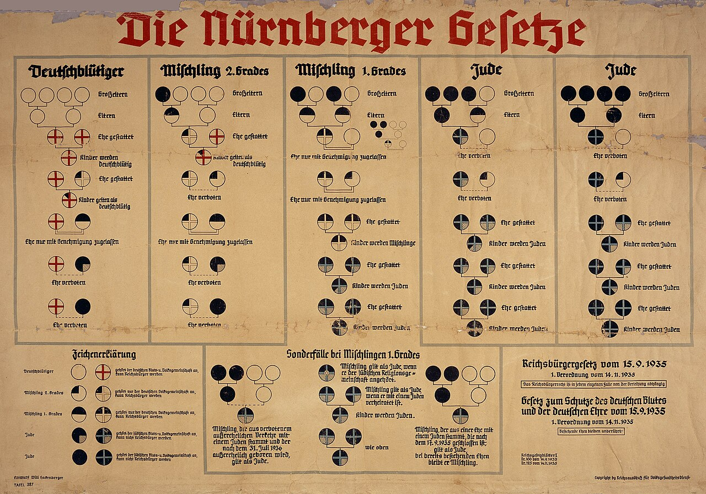
Source
German Government ("Entwurf Willi Hackenberger", "Copyright by Reichsausschuß für Volksgesundheitsdienst", government agency apparently part of the Reichs- und Preußisches Ministerium des Innern), Nuremberg laws Racial Chart, Wikimedia Commons. Licence : Domaine public.Le 15 septembre 1935, le régime fait adopter trois lois. La première définit l'apparence du drapeau du Reich. Les deux autres retirent des droits.
La loi sur la citoyenneté du Reich
Selon cette loi, pour être citoyen du Reich, il faut être de sang allemand et servir le Reich. Elle établit une distinction entre les citoyens et les simples sujets, privés de droits politiques. Le régime rejette l'idée que les Juifs forment une communauté religieuse et les définit comme une race déterminée par la naissance.
La loi sur la protection du sang et de l'honneur allemands
Voici les interdictions que cette loi impose aux Juifs :
- les mariages entre Juifs et citoyens de sang allemand sont interdits et déclarés nuls;
- les relations hors mariage sont interdites;
- les Juifs n'ont pas le droit d'employer des domestiques de sang allemand âgées de moins de 45 ans;
- il leur est interdit d'arborer le drapeau du Reich.
La définition juridique imposée par le régime
Le régime se tourne vers la généalogie. Les personnes ayant au moins trois grands-parents nés dans la communauté juive sont désignées comme juives. Ce statut se transmet aux enfants et aux petits-enfants. Cette définition juridique touche des dizaines de milliers de personnes qui ne se considéraient pas comme juives ou qui n'avaient aucun lien religieux ou culturel avec la communauté juive. Les personnes converties du judaïsme au christianisme, ou celles dont les parents ou grands-parents s'étaient converties, sont désignées comme juives. La loi les prive de la citoyenneté allemande et de leurs droits fondamentaux.
Source : Encyclopédie multimédia de la Shoah, United States Holocaust Memorial Museum
Les lois antijuives, de 1933 à 1939
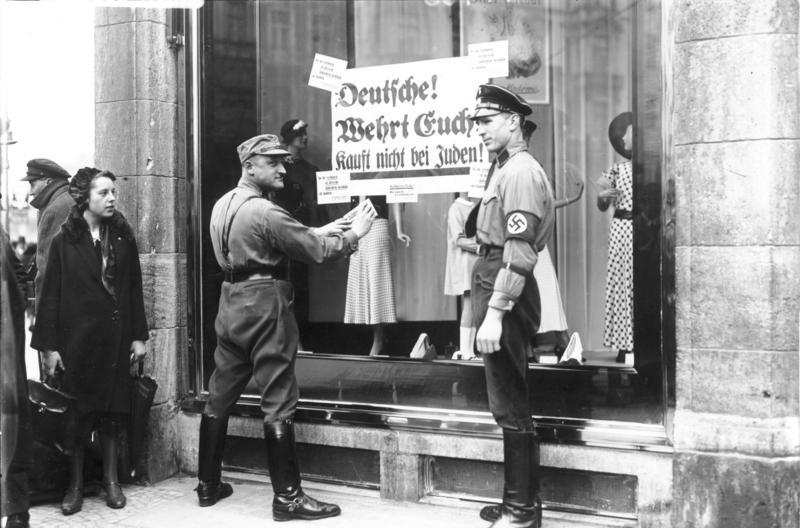
Source
Georg Pahl, Bundesarchiv Bild 102-14468, Berlin, NS-Boykott gegen jüdische Geschäfte, Wikimedia Commons. Licence : CC BY-SA 3.0 de.Les lois de Nuremberg ne sont pas un point de départ. Elles s'inscrivent dans une suite de mesures qui retirent un droit à la fois, profession par profession, lieu par lieu.
Les départs massifs
En janvier 1933, il y avait environ 523 000 Juifs en Allemagne, soit moins de 1 pour cent de la population du pays. Cette population était surtout urbaine et environ un tiers vivait à Berlin. La première conséquence de l'arrivée du régime au pouvoir fut une vague d'émigration de près de 40 000 personnes, en grande partie vers les pays européens voisins. La plupart de ces réfugiés furent arrêtés après la conquête de l'Europe occidentale en mai 1940.
Les événements de 1938 provoquent une hausse brutale de l'émigration : l'annexion de l'Autriche en mars, l'augmentation des agressions au printemps et à l'automne, la Nuit de Cristal en novembre et la confiscation des biens juifs qui s'ensuit. Environ 36 000 Juifs quittent l'Allemagne et l'Autriche en 1938, et 77 000 en 1939. En 1938 et 1939, la Grande-Bretagne accepte de recevoir 10 000 enfants juifs non accompagnés, dans le cadre du programme connu sous le nom de Kindertransport.
En septembre 1939, environ 282 000 Juifs avaient quitté l'Allemagne et 117 000 l'Autriche annexée. Parmi eux, 95 000 avaient émigré aux États-Unis, 60 000 en Palestine, 40 000 en Grande-Bretagne, 30 000 en France et environ 75 000 en Amérique centrale et en Amérique du Sud. Plus de 18 000 Juifs du Reich trouvèrent aussi refuge à Shanghai. À la fin de 1939, il restait environ 202 000 Juifs en Allemagne et 57 000 en Autriche. En octobre 1941, lorsque l'émigration fut interdite, ce nombre était tombé à 163 000.
Source : Encyclopédie multimédia de la Shoah, United States Holocaust Memorial Museum
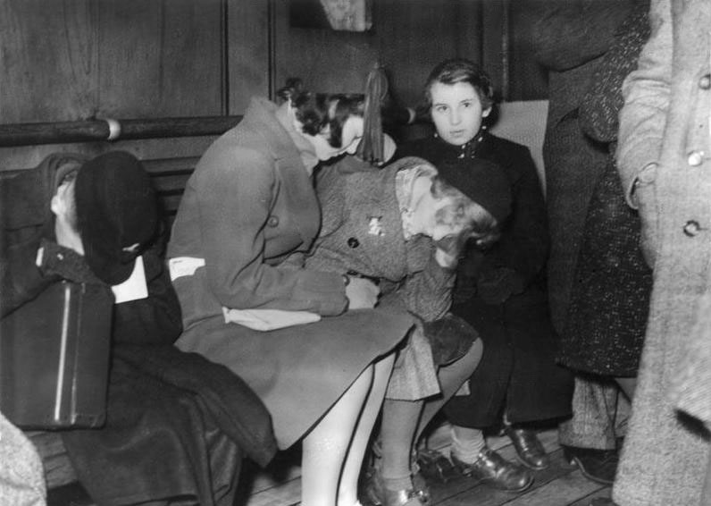
Source
Unknown author Unknown author, Bundesarchiv Bild 183-1987-0928-501, England, Jüdische Flüchtlingskinder, Wikimedia Commons. Licence : CC BY-SA 3.0 de.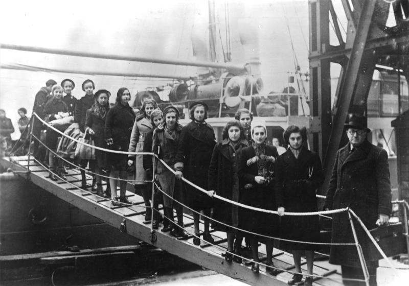
Source
Unknown Unknown, Bundesarchiv Bild 183-S69279, London, Ankunft jüdische Flüchtlinge, Wikimedia Commons. Licence : CC BY-SA 3.0 de.Le ghetto de Varsovie
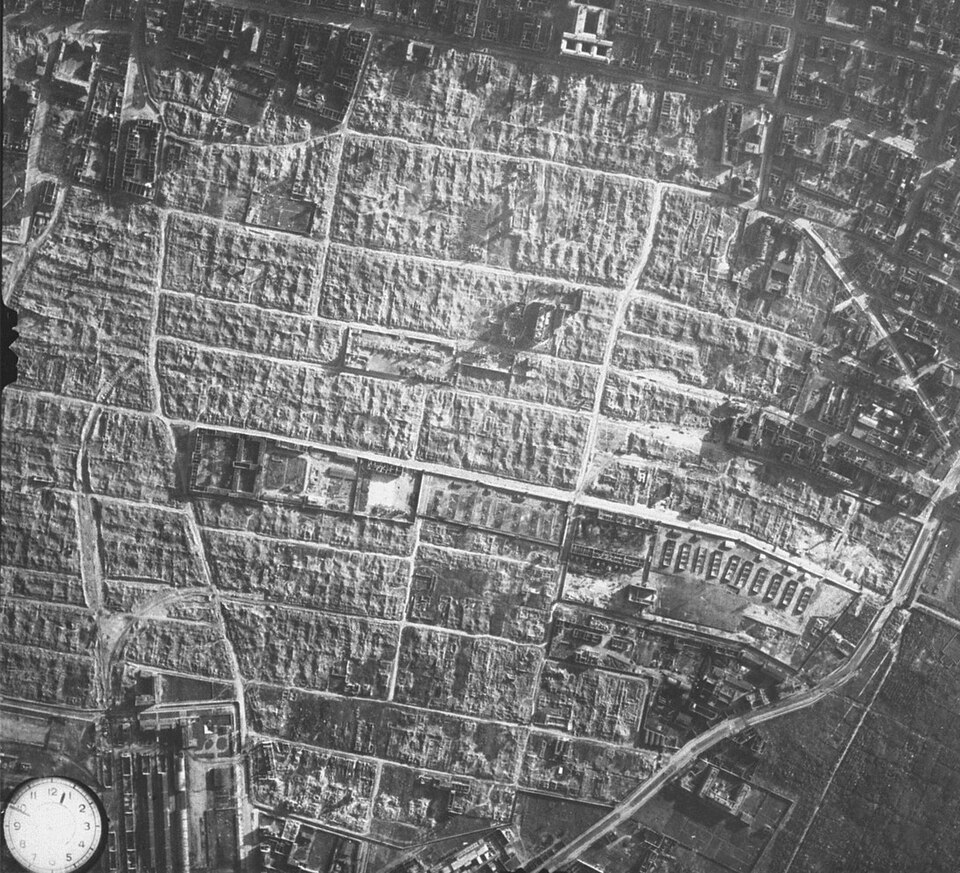
Source
No original autorship, made by automatic camera installed on the plane. Released to the public domain, Aerial photograph of the destroyed Warsaw Ghetto, Wikimedia Commons. Licence : Domaine public.Le 12 octobre 1940, les autorités allemandes ordonnent la création d'un ghetto à Varsovie. Tous les résidents juifs de la capitale polonaise doivent s'y installer, dans une zone séparée du reste de la ville en novembre. Le ghetto est entouré d'un mur de plus de 3 mètres de haut, surmonté de fil de fer barbelé et gardé de manière à empêcher toute circulation. On estime à 400 000 personnes la population du ghetto, en incluant les Juifs des villes voisines forcés d'y déménager. Ils vivent sur une superficie d'environ 300 hectares, avec une moyenne de 7,2 personnes par pièce.
Les habitants sont coupés du reste du monde. La ration alimentaire journalière équivaut au dixième de l'apport minimal requis. Le ghetto devient un foyer d'épidémies. Plus de 80 000 personnes y meurent. En juillet 1942 commencent les déportations vers le camp d'extermination de Treblinka. Lorsque les premiers ordres de déportation sont donnés, Adam Czerniaków, président du conseil juif, refuse d'établir les listes des personnes à déporter et se donne la mort le 23 juillet 1942.
Source : Encyclopédie multimédia de la Shoah, United States Holocaust Memorial Museum
La conférence de Wannsee
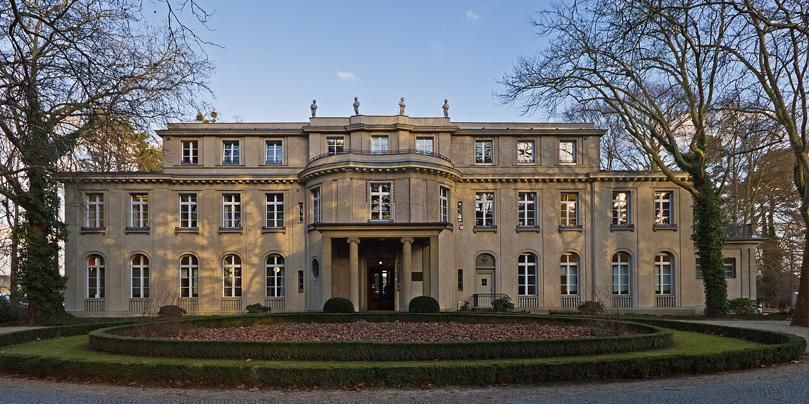
Source
A.Savin, Haus der Wannsee-Konferenz 02-2014, Wikimedia Commons. Licence : Creative Commons BY-SA 3.0.Le 20 janvier 1942, quinze hauts fonctionnaires du parti et de l'administration allemande se réunissent dans une villa de Wannsee, en banlieue de Berlin, pour organiser ce qu'ils appellent la solution finale. Reinhard Heydrich y annonce que le plan concernerait environ 11 millions de personnes en Europe. Il ajoute aux Juifs des pays contrôlés par l'Axe ceux du Royaume-Uni et des pays neutres. Pour les personnes vivant dans le Reich, les lois de Nuremberg serviraient de base pour déterminer qui était visé.
Source : Encyclopédie multimédia de la Shoah, United States Holocaust Memorial Museum
Les camps de concentration et d'extermination
Un camp de concentration est un lieu fermé de grande taille créé pour regrouper et détenir une population considérée comme ennemie, dans de très mauvaises conditions. Cette population peut se composer d'opposants politiques, de groupes ethniques ou religieux, de civils d'une zone de combats ou d'autres groupes, souvent en temps de guerre.
Les camps d'extermination étaient des centres de mise à mort à grande échelle, créés dans le seul but de tuer le plus grand nombre de personnes dans le moins de temps possible. Ils firent près de trois millions de victimes, juives dans leur grande majorité, assassinées au moyen de chambres à gaz. Ils prirent le relais des fusillades de masse commises à l'est de l'Europe à partir de 1941.